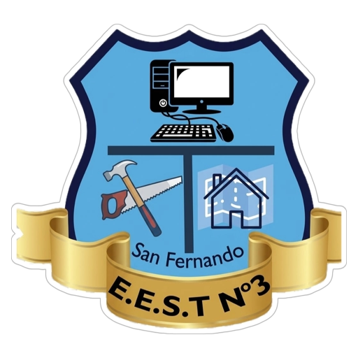
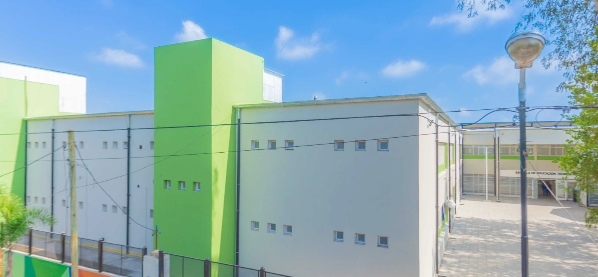

Horarios
Próximamente: horarios por año, división y turno, con fecha de actualización.

Formación técnica · San Fernando
Diseñar. Transformar. Crear.
Explorar la trayectoria ↓
La propuesta
Formación para diseñar y producir muebles y elementos de carpintería, seleccionar materiales, operar y mantener equipos e instalar productos, integrando calidad, seguridad y cuidado ambiental.
Síntesis orientativa del diseño curricular aportado. No sustituye el documento completo ni acredita incumbencias, matrícula o habilitación profesional. La institución debe confirmar su aplicación y vigencia.
Aprender haciendo
Plan de estudios
La formación combina diseño de mobiliario, elaboración de productos de carpintería y gestión de procesos y emprendimientos. El ciclo superior reúne 4.536 horas reloj; séptimo incluye prácticas profesionalizantes del sector.
Fuente: Diseño curricular de la Tecnicatura en Industrialización de la Madera y el Mueble. Provincia de Buenos Aires, DGCyE. DGCyE · Resolución 2254/15 · Expediente 5801-0431514/15.
Documento aportado: Madera y Mueble diseño curricular.pdf. Resolución: páginas 1–3 del PDF. Perfil: páginas 5–6. Estructura curricular: página 7.
Total del ciclo superior: 4.536 horas reloj. Se presenta una síntesis y la estructura de materias; el PDF íntegro no se aloja en este sitio.
Consultar a Secretaría sobre el plan vigente →De 4.º a 7.º
Materias y horas reloj anuales según la tabla curricular del documento aportado. No son horarios de clases ni horas módulo. Las divisiones, turnos y docentes se informarán por separado.
Ciclo superior
Total del año: 1.152 horas reloj, incluidas las prácticas cuando corresponden.
| Materia / espacio curricular | Horas reloj anuales |
|---|---|
| Literatura | 72 |
| Inglés | 72 |
| Educación Física | 72 |
| Salud y Adolescencia | 72 |
| Historia | 72 |
| Geografía | 72 |
| Filosofía | 72 |
| Materia / espacio curricular | Horas reloj anuales |
|---|---|
| Matemática-Ciclo Superior | 108 |
| Física | 108 |
| Química | 72 |
| Tecnología de la Representación | 72 |
| Materia / espacio curricular | Horas reloj anuales |
|---|---|
| Tecnología de Control | 144 |
| Diseño y Fabricación | 144 |
Ciclo superior
Total del año: 1.152 horas reloj, incluidas las prácticas cuando corresponden.
| Materia / espacio curricular | Horas reloj anuales |
|---|---|
| Literatura | 72 |
| Inglés | 72 |
| Educación Física | 72 |
| Política y Ciudadanía | 72 |
| Materia / espacio curricular | Horas reloj anuales |
|---|---|
| Análisis Matemático | 144 |
| Historia del Diseño y del Mobiliario | 72 |
| Materia / espacio curricular | Horas reloj anuales |
|---|---|
| Sistemas Mecánicos | 108 |
| Ergonomía | 108 |
| Tecnología de los Materiales | 144 |
| Fabricación de Mobiliario | 144 |
| Diseño y Representación | 144 |
Ciclo superior
Total del año: 1.152 horas reloj, incluidas las prácticas cuando corresponden.
| Materia / espacio curricular | Horas reloj anuales |
|---|---|
| Literatura | 72 |
| Inglés | 72 |
| Educación Física | 72 |
| Arte | 72 |
| Materia / espacio curricular | Horas reloj anuales |
|---|---|
| Matemática Aplicada | 108 |
| Ciencia, Tecnología y Sociedad | 72 |
| Derecho del Trabajo | 72 |
| Materia / espacio curricular | Horas reloj anuales |
|---|---|
| Materiales y Procesos | 108 |
| Procesos de Fabricación de Mobiliario | 216 |
| Tecnologías y Soluciones Constructivas | 144 |
| Diseño y Prototipos de Mobiliario | 144 |
Ciclo superior
Total del año: 1.080 horas reloj, incluidas las prácticas cuando corresponden.
| Materia / espacio curricular | Horas reloj anuales |
|---|---|
| Prácticas Profesionalizantes del Sector de la Madera y el Mueble | 216 |
| Materia / espacio curricular | Horas reloj anuales |
|---|---|
| Emprendimientos Productivos y Desarrollo Local | 72 |
| Seguridad, Higiene y Protección Ambiental | 72 |
| Organización de los Procesos Productivos | 108 |
| Materia / espacio curricular | Horas reloj anuales |
|---|---|
| Instalación de Mobiliario y Estructuras de Madera | 144 |
| Desarrollo de Productos de Mobiliario | 144 |
| Instalaciones Industriales de Carpintería | 108 |
| Fabricación Automatizada en Carpintería y Muebles | 216 |
Organización académica
Próximamente: horarios por año, división y turno, con fecha de actualización.
Próximamente: equipo docente y canales institucionales autorizados. No se publicarán datos de contacto personales.
Proyectos y experiencias
Conocé el taller de Industrialización de la Madera y el Mueble: bancos, herramientas, equipos y piezas en elaboración. Cinco fotografías aportadas para esta entrega, con difusión autorizada.
Consultá la agenda o sumate a la comunidad para guardar tus intereses.
Calendario 2026 Mi comunidad →Radio Técnica 3
Himno Nacional Argentino